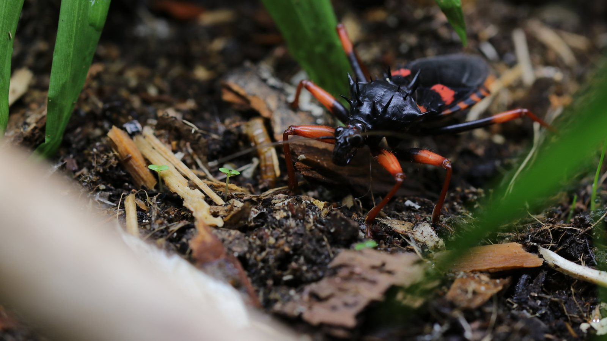
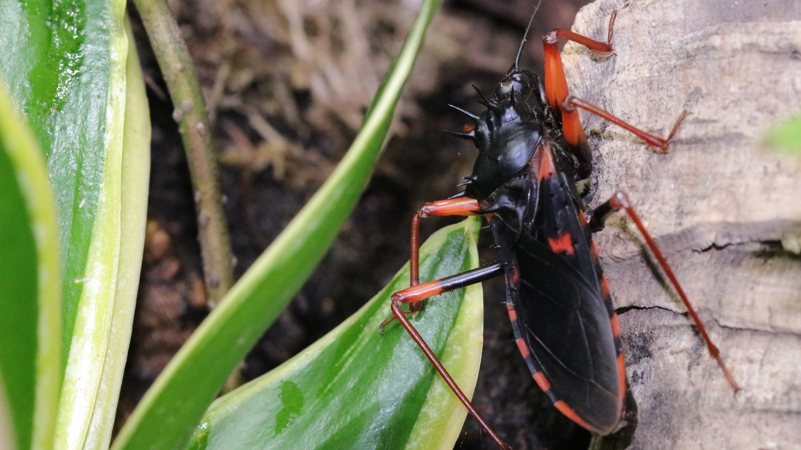
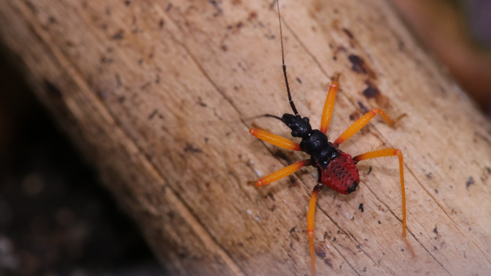

A predatory assassin bug from tropical Africa. Like other reduviids, it uses a piercing-sucking rostrum to subdue prey and take in liquefied tissues.
Species profile · Current resident
Psyttala horrida
Assassin bug
Psyttala horrida brings a different shape and scale to the current collection. The updated portrait clearly shows an adult's dark wings, red legs, and spined thorax on cork bark.

Scientific namePsyttala horrida
FamilyReduviidae
Native rangeAfrica
TaxonomyAccepted species
SexMixed colony
In the wild
Natural history.
The rough, sculpted body and long legs make the insects look almost plant-like at rest. Their predatory mouthparts also mean they should not be handled casually.
The colony includes multiple sexes and life stages. Ventilation, climbing structure, secure containment, and carefully sized live prey are tracked at colony level.
Taxonomy and range
Psyttala horrida is an African assassin bug in the family Reduviidae. A modern morphological study describes its eggs and nymphs and notes that all six recognised species of Psyttala are African generalist predators of insects and other arthropods.
What the record can show
The same study addresses a common spelling problem: Psyttala is the original and correct genus spelling, while “Psytalla” is widely repeated in error. This profile uses Psyttala consistently and treats the group as a colony rather than inventing individual records.
In my care
In my care.
This assassin bug colony brings predatory insects into the collection. The profile follows the colony as a living group record, with habitat, feeding observations, and photography kept distinct from published species-level research.



From Instagram
Posts & reels.
From the channel
Related viewing.
Introvertebrates on YouTube
Creating a beautiful assassin bug habitat
The enclosure build and environmental thinking behind the assassin bugs in the collection.
Personal observations
From the Codex.
Introvertebrates Codex
Current colony · keeper record
A privacy-safe summary of this resident’s time in care, feeding outcomes, molts, and measurements. These are observations from the Introvertebrates collection, not species-wide averages.
Awaiting a privacy-reviewed Codex export. No invented statistics are shown.
Never published here: raw notes, record IDs, seller or breeder details, enclosure identifiers, local file paths, or exact private event dates.
Continue exploring
Related profiles.


Read further
Sources.
- Morphological study of Psyttala horrida eggs and nymphsView the source.